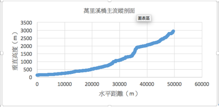
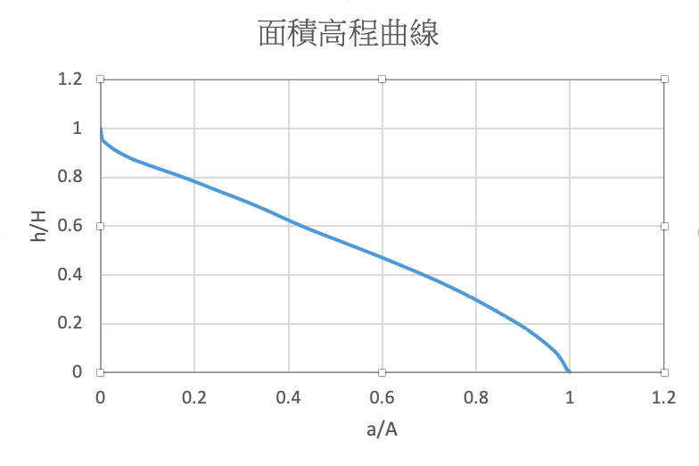

I joined Geographical Information Science Lab in the Department of Geography in National Taiwan University. My academic supervisor is Professor Tzai-Hung Wen, Ph.D.
集水區面積 由Calculate Geometry 計算出為 235150482.13 平方公尺
集水區周長
由Calculate Geometry 計算出為93104.65 公尺
不對稱度
為主流右側面積占全水區的面積之比值。在花蓮的萬里溪橋以上的集水區，右岸(向下游的方向看的右邊)的面積為156018844.91平方公尺，而整個集水區的面積為235150482.13 平方公尺，故此集水區的不對稱度為156018844.91/235150482.13等於0.663485
河流總長度
河流總長度由Calculate Geometry 計算出為130923.120 公尺
主流(最遠流長)長度 主
流總長度由Calculate Geometry 計算出為47814.469133 公尺。
河流數量
河流數量由屬性表格的統計資料得出 67 條。
排水密度(又稱水系密度)
河流總長度為=130923.120公尺，集水區的面積為235150482.13平方公尺，水系密度 : 130923.120 / 235150482.13=0.000557。(河流長度（m）/集水區面積（m2）)
河流頻率
河流數量有67個，除以集區面積235150482.13 平方公尺，河川頻率為0.412501812。單位：(河流個數（個）/集水區面積（km2）)
細長比
面積=235.150平方公里，等面積圓的直徑公式為=2√(A/π)，計算出為17.303公里。且最遠流常比為集水區stream length當中，最長的流長為47.814公里，計算過程參數如下: 細長比＝17.303/ 47.814 =0.361881457。
崎嶇數
崎嶇度為水系密度乘以最高最低差 排水密度為0.000557 集水區高低差為 2965 公尺 0.000557*2965= 1.651505
一級河平均坡降
一級河的一級河流的高程加總除以長度加總，得到平均坡度0.222。
主流縱剖面
河川級序的面積高度積分曲線(圖、積分值都要呈現)
判讀根據 ：Strahler 演育模式是將地形演育階 段總共分成三個時期，幼年期、壯年期及老年期，幼年期的集水區測高曲線呈現凸形， 面積高度積分值較高(HI>0.6)；壯年期的集水區測高曲線呈現 S 形，測高曲線積分值介 於 0.4～0.6 間；老年期的集水區由於受到侵蝕程度較高，測高曲線呈現凹形，測高曲線 積分值較低(HI小於0.4)

2016-2 Environmental Hydrology and Lab. : Wanli River Introduction and Comparison between rivers in eastern Taiwan and western Taiwan
I joined Geographical Information Science Lab in the Department of Geography in National Taiwan University. My academic supervisor is Professor Tzai-Hung Wen, Ph.D.
Any cooperation or suggestion is welcome to me. E-mail is on school system. Phonenumer and the Address is Geography Department of National Taiwan University
Since 7,August 2019 (Wed)